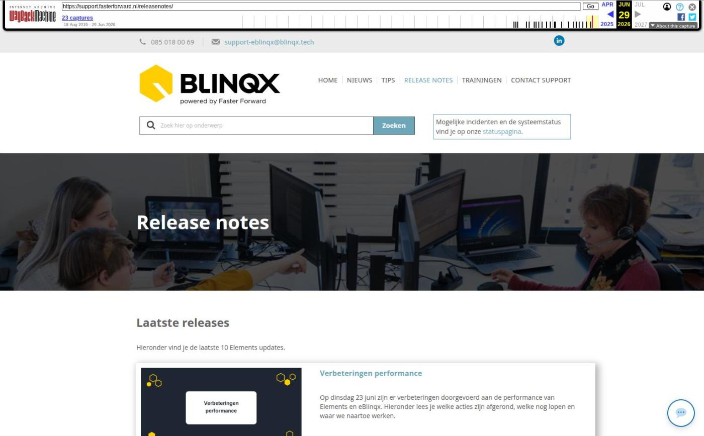

Release notes

Tekstinhoud
Laatste releases
Hieronder vind je de laatste 10 Elements updates.
Verbeteringen performance
Op dinsdag 23 juni zijn er verbeteringen doorgevoerd aan de performance van Elements en eBlinqx. Hieronder lees je welke acties zijn afgerond, welke nog lopen en waar we naartoe werken.
Lees verder
Voorbereidingen op HDN 26 en verbeteringen PortefeuilleSignalen
Op woensdag 27 mei zijn Elements en eBlinqx weer verbeterd en uitgebreid met nieuwe features. Deze update bereidt Elements voor op de aankomende HDN-versie 26. De overgang naar deze nieuwe HDN versie vindt plaats op 30 mei 2026.
Lees verder
Nog meer data en documenten vergelijken
Op woensdag 29 april zijn Elements en eBlinqx weer verbeterd en uitgebreid met nieuwe features. Deze release bevat onder andere uitbreiding van het aantal documenten dat slim vergeleken kan worden, en verbeteringen in de koppeling met PortefeuilleSignalen.
Lees verder
Gemakkelijk data en documenten vergelijken
Op donderdag 26 maart zijn Elements en eBlinqx weer verbeterd en uitgebreid met nieuwe features. Deze release bevat onder andere gemakkelijk data en documenten vergelijken en arrangementen bankgarantie Nationale Waarborg.
Lees verder
Verbeteringen boekhouding en facturatie
Op maandag 16 maart zijn Elements en eBlinqx weer verbeterd en uitgebreid met nieuwe features. Deze release bevat verbeteringen boekhouding en facturatie.
Lees verder
Verbeteringen gespreksopname en onder de motorkap
Op dinsdag 24 februari zijn Elements en eBlinqx weer verbeterd en uitgebreid met nieuwe features. Deze release bevat onder andere verbeteringen onder de motorkap. Ook zijn er nieuwe features alleen voor eBlinqx, namelijk verbeteringen in gespreksopname.
Lees verder
Verbeteringen onder de motorkap en gespreksopnames
Op dinsdag 13 januari zijn Elements en eBlinqx weer verbeterd en uitgebreid met nieuwe features. Deze release bevat verbeteringen onder de motorkap en een verbetering gespreksopnames.
Lees verder
HDN release: afscheid van HDN certificaten
Op maandag 1 december vindt de HDN release plaats. HDN neemt afscheid van de HDN certificaten voor adviseurs. In Elements en eBlinqx zijn er veel technische aanpassingen doorgevoerd, zodat de communicatie en het verkeer met HDN goed blijft verlopen.
Lees verder
Verbeterde verwerking van grote e-mailvolumes via Office 365 en voorbereiding HDN
Op woensdag 19 november zijn Elements en eBlinqx weer verbeterd en uitgebreid met nieuwe features. Deze release bevat een verbeterde verwerking van grote e-mailvolumes via Office 365 en voorbereidingen HDN.
Lees verder
Nu zelf schade- en levensverzekeringen omnummeren
Op dinsdag 21 oktober zijn Elements en eBlinqx weer verbeterd en uitgebreid met nieuwe features. Deze release bevat de geheel nieuwe module Omnummering.
Lees verder
Archief
In het archief vind je alle Elements updates die de afgelopen jaren live zijn gegaan.
Gereleased in 2026 Gereleased in 2025 Gereleased in 2024 Gereleased in 2023
Op de hoogte blijven?
Meld je aan voor onze releasemails om op de hoogte te blijven van alle Elements updates.
AANMELDEN RELEASENOTES